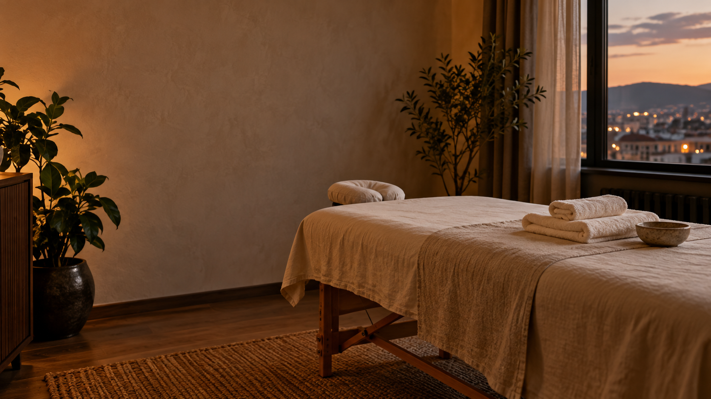

Вправление вывихов & коррекция суставов
Диагностика смещения, точное и щадящее вправление суставов (плечевой, локтевой, голеностоп, фаланги). Снятие острого блока и фиксация.
Костоправ и специалист по физической реабилитации в Иркутске. Вправление вывихов, устранение последствий растяжений, реабилитация после переломов и снятие болей при остеохондрозе.

Baryashan — специализированная практика восстановления опорно-двигательного аппарата в Иркутске. Мы не маскируем симптомы, а находим и устраняем первопричину: вправляем суставы, снимаем функциональные блоки позвоночника, восстанавливаем подвижность после травм и гипса.
Выберите направление — запишитесь в Telegram на удобное время.
Диагностика смещения, точное и щадящее вправление суставов (плечевой, локтевой, голеностоп, фаланги). Снятие острого блока и фиксация.
Разработка суставов после гипса, ликвидация контрактур, восстановление подвижности, кровообращения и мышечного тонуса.
Снятие воспаления, уменьшение отёка, восстановление эластичности мышечно-фасциального аппарата после спортивных и бытовых травм.
Комплексная работа с шейным, грудным и поясничным отделами. Декомпрессия межпозвоночных дисков, снятие зажимов и онемения в руках и ногах.
Коррекция функциональных смещений, перекосов таза и мышечной асимметрии. Восстановление естественной биомеханики позвоночника.
Интенсивная миофасциальная проработка спазмированных мышц, триггерных зон и застойных очагов. Возвращает лёгкость всему телу.
Профессиональная помощь при травмах, вывихах, переломах и болях в спине. Индивидуальный приём в тихом кабинете строго по записи.